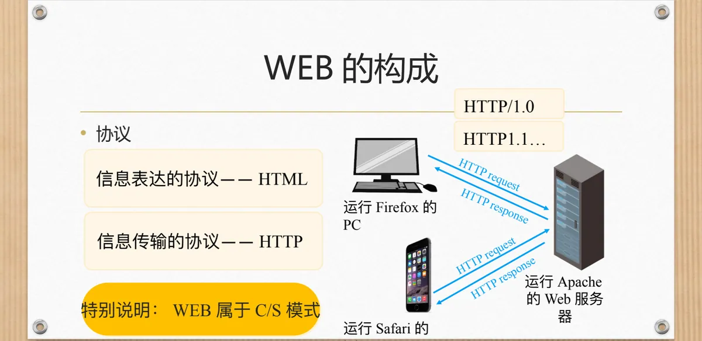
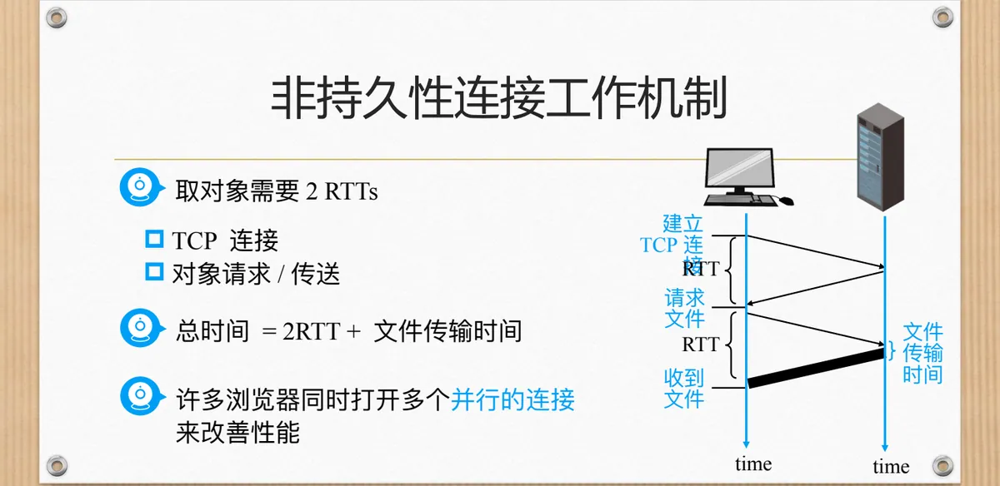
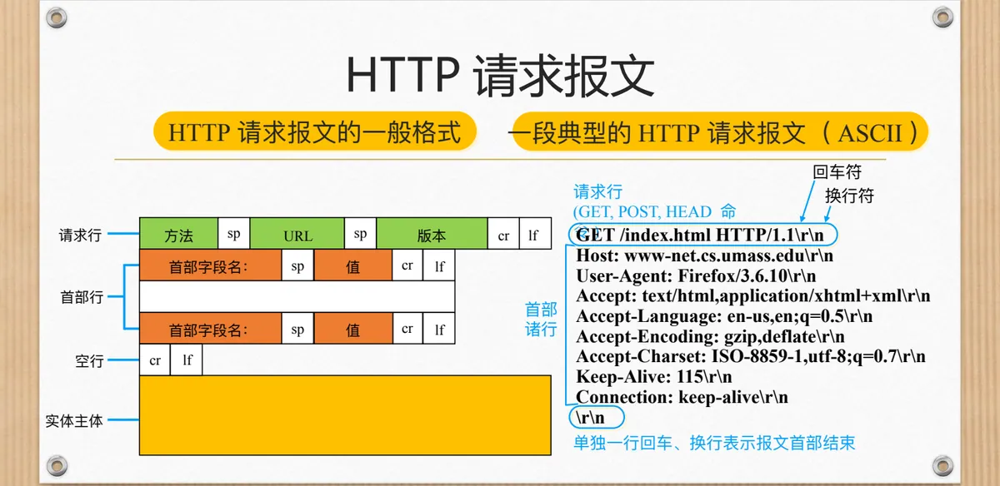
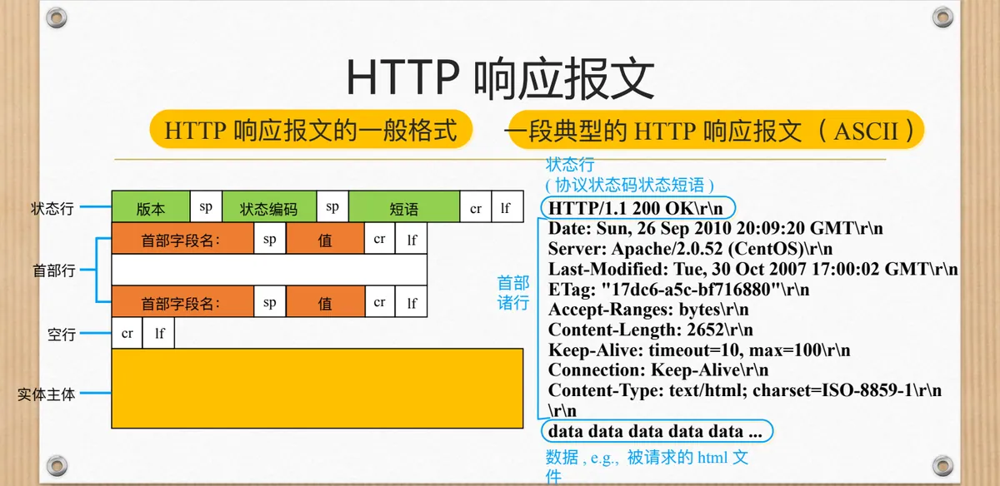
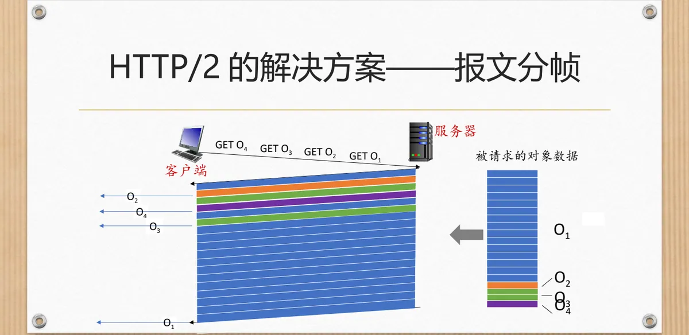
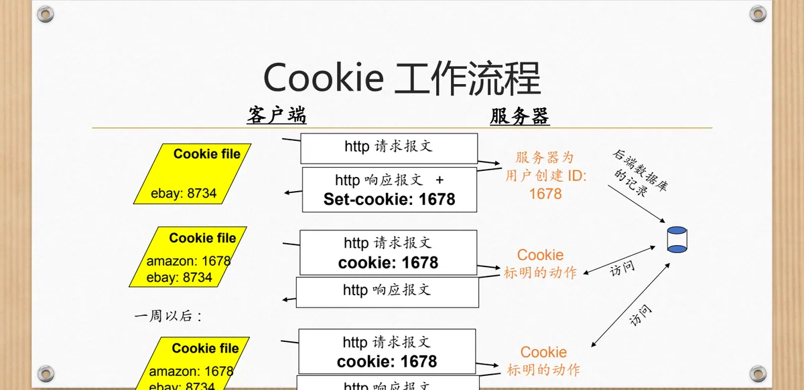

计算机通信与网络 · 第二版讲义 · 第 3 章 网络服务及应用
3.4 万维网（World Wide Web）
万维网 WWW（World Wide Web）是网络服务里最贴近日常生活的那个：输入网址，页面就出现了。它能成立靠三样东西——用 HTML（HyperText Markup Language，超文本标记语言）描述内容、用 URL（Uniform Resource Locator，统一资源定位符）定位对象、用 HTTP（HyperText Transfer Protocol，超文本传输协议）把对象搬到浏览器。本节先看它在通信史上的位置与组成，再顺着内容的表达与传输，讲清 HTTP/1.0 到 HTTP/3 的演进，最后讨论 Cookie 与隐私。
1. 从电话、广播到万维网
课件先把万维网放回通信技术的时间线：19 世纪 70 年代电话的发明，扩展了人类通信的范围，增强了通信的实效性；20 世纪 20 年代广播收音机和电视的发明，极大丰富了人类可获取的信息；20 世纪 90 年代 WEB 的发明，则极大提高了人类主动获取信息的能力——前两次是把信息送到人面前，这一次是人自己去取。
三者的共同点是「广播和按需操作」，差别在发布权：你不能发布电视节目，但可以发布 WEB 内容。
2. WEB 的构成
客户端是浏览器（Browser），课件列举 IE、Maxthon、Firefox 等；服务器端是 Web 服务器，课件列举 IIS、Apache、TomCat 等。课件用运行 Firefox 的 PC、运行 Safari 的 iPhone 和运行 Apache 的 Web 服务器示意这个场景。两边交换的是 HTTP 请求（HTTP request）与 HTTP 响应（HTTP response）。
支撑这套交互的是两种协议：信息传输的协议是 HTTP（课件标注了 HTTP/1.0、HTTP1.1……各版本），信息表达的协议是 HTML——前者管「怎么传」，后者管「长什么样」。课件特别说明：WEB 属于 C/S（客户/服务器）模式，这与第一版讲义 6.2 客户—服务器方式和对等方式的划分一致。

3. WEB 内容的表达：对象与 URL
网页看似一个整体，实际由许多零件拼成：Web 页面由一些对象（object）组成，对象可以是 HTML 文件、JPEG 图片、音频文件、Java Applet……其中 HTML 文件是 Web 页面的基础，是一个容器对象——它本身是文本，又指出页面里还嵌了哪些对象。
零件虽多，寻址只有一个办法：任何一个对象都可以用 URL 来定位。课件给的例子是 www.hust.edu.cn/cs/pic.gif，其中 www.hust.edu.cn 是主机名、cs/pic.gif 是路径名。主机名要变成 IP 地址还得靠域名解析，见 3.7 域名解析服务（DNS），第一版讲义 6.4 域名系统DNS 也讲过同一件事。
4. WEB 内容的传输：HTTP 与 TCP
取回对象靠 HTTP 协议，课件给出了它的版本依据：http1.0: RFC 1945、http1.1: RFC 2068。HTTP 工作在客户端/服务器模式下：客户端（浏览器）请求、接收、展示 Web 对象，服务器发送对象、对请求进行响应；HTTP 报文是应用层协议报文，在浏览器（http client）和 Web 服务器（http server）之间交换。
报文本身不负责可靠传输，这件事交给下面的 TCP：客户端启动 TCP 连接（创建套接字）到服务器，端口 80；服务器接受来自客户端的 TCP 连接；HTTP 报文在连接上往返交换；最后关闭 TCP 连接。端口 80 是 HTTP 服务器的默认端口，与第一版讲义 5.2 运输层端口号、复用与分用的概念相呼应；TCP 提供面向连接的可靠服务，见 3.3 节。
5. HTTP/1.0 的非持久连接
HTTP/1.0 采用非持久连接（non-persistent connection）：一个对象用完，连接就断。课件用一个具体场景说明：假设用户键入了 URL www.hust.edu.cn/cs/home.index，该网页包含文本并引用了 10 个 jpeg 图片，取回这个页面要走以下步骤：
- 1a. http 客户端启动 TCP 连接到 www.hust.edu.cn 上的 http 服务器（进程）；Port 80 是 http 服务器的默认端口；
- 1b. 服务器在 port 80 等待 TCP 的连接请求，「接受」连接并通知客户端；
- 2. http 客户端发送 http 请求报文（包括 URL）进入 TCP 连接插口（socket）；
- 3. http 服务器接收到请求报文，形成响应报文（包含了所请求的对象 cs/home.index），将报文送入插口（socket）；
- 4. http 服务器关闭 TCP 连接；
- 5. http 客户端接收到了包含 html 文件的响应报文，分析 html 文件，发现 10 个引用的 jpeg 对象；
- 6. 对 10 个 jpeg objects 逐个重复 1–5 步。
第 4 步和第 6 步是这套机制的关键：每取一个对象都要重新建一次连接。课件把代价算成时间——取一个对象需要 2 个 RTT：一个 RTT 用于建立 TCP 连接，一个 RTT 用于请求文件并等文件送达，再加文件传输时间，所以每个对象的总时间 = 2RTT + 文件传输时间；页面里嵌了 10 张图片，这 2 个 RTT 就要重复 11 次。实际中的补救办法是许多浏览器同时打开多个并行的连接来改善性能。

6. HTTP/1.1 引入的持久连接
消除上述浪费的办法是让连接活下来。持久连接（persistent connection）的做法是：服务器在发送响应后，不再断开 TCP 连接，而是保持该连接用于后续对象的传送，直至该连接「休息」了一个较长的时间后，方断开该连接。同一个页面里的 10 张图片，便可以共用这条已建好的连接。
好处不止省时间：持久连接减少了对服务器端连接数的需要，从而减少了对服务器端套接字资源的占用，提高了服务器的负载能力。它又分为两种方式——非流水线方式，一个对象传输完成方能传输下一个；流水线方式，可以一次性发送所有请求，慢慢接收。
7. HTTP 请求报文的格式与方法
HTTP 报文分两类：HTTP 请求报文与 HTTP 响应报文，都是纯 ASCII 文本。请求报文的一般格式由四段构成：
请求行： 方法 sp URL sp 版本 cr lf
首部行： 首部字段名：值 cr lf
……
空行： cr lf
实体主体：……请求行里的方法有 GET、POST、HEAD 等命令；首部行由「首部字段名：值」构成；单独一行回车、换行表示报文首部结束，空行之后才是实体主体。课件给了一段典型的 HTTP 请求报文（ASCII）：
GET /index.html HTTP/1.1\r\n
Host: www-net.cs.umass.edu\r\n
User-Agent: Firefox/3.6.10\r\n
Accept: text/html,application/xhtml+xml\r\n
Accept-Language: en-us,en;q=0.5\r\n
Accept-Encoding: gzip,deflate\r\n
Accept-Charset: ISO-8859-1,utf-8;q=0.7\r\n
Keep-Alive: 115\r\n
Connection: keep-alive\r\n
\r\n
请求行支持的方法及其含义，课件逐条给出：
| 方法 | 含义 |
|---|---|
| GET | 向服务器请求指定 URL 的对象 |
| POST | 用于向服务器提交表单数据，也可以同时请求一个 WEB 页面 |
| HEAD | 返回响应报文，不包含请求的对象 |
| PUT | 上传的文件放在实体主体字段中，目标路径由 URL 字段标明 |
| DELETE | 删除 URL 字段中指定的文件 |
除了用 PUT 把数据放进实体主体，还有另一种上传数据的方式：使用 GET 方法，将需要上传的数据放到 URL 中。课件给的例子是：
www.somesite.com/animalsearch?monkeys&banana两种做法的区别在于数据放在哪里：GET 写法把数据直接拼进 URL，URL 会变长，也会留在浏览器的历史记录和服务器日志里。
8. HTTP 响应报文的格式与常见状态码
响应报文的结构与请求报文对称，只是第一行换成了状态行：由协议版本、状态编码和短语三部分组成；之后同样是首部行、空行，最后是实体主体，里面装着数据。
状态行： 版本 状态编码 短语 cr lf
首部行： 首部字段名：值 cr lf
……
空行： cr lf
实体主体：数据课件给了一段典型的 HTTP 响应报文（ASCII）：
HTTP/1.1 200 OK\r\n
Date: Sun, 26 Sep 2010 20:09:20 GMT\r\n
Server: Apache/2.0.52 (CentOS)\r\n
Last-Modified: Tue, 30 Oct 2007 17:00:02 GMT\r\n
ETag: "17dc6-a5c-bf716880"\r\n
Accept-Ranges: bytes\r\n
Content-Length: 2652\r\n
Keep-Alive: timeout=10, max=100\r\n
Connection: Keep-Alive\r\n
Content-Type: text/html; charset=ISO-8859-1\r\n
\r\n
data data data data data ...上例中的 Content-Length: 2652 与 Content-Type: text/html，正说明实体主体是长度 2652 字节的 html 数据。状态行里的状态编码则告诉客户端发生了什么，课件列出了几种最常见的：
| 状态码与短语 | 含义 |
|---|---|
| 200 OK | 请求成功，被请求的对象在报文中 |
| 301 Moved Permanently | 被请求的对象被移动过，新的位置在报文中有说明（Location:） |
| 400 Bad Request | 服务器不懂请求报文 |
| 404 Not Found | 服务器上找不到请求的对象 |
| 505 HTTP Version Not Supported | 服务器不支持请求报文使用的 HTTP 协议版本 |

9. HTTP/2：用报文分帧消除队首阻塞
HTTP/1.1 的持久连接解决了建连开销，却留下一个新麻烦。课件说的 HTTP/1.1 存在的问题是：存在多个对象时，小对象会被排在前面的大对象阻塞——这就是队首阻塞 HOL（Head-Of-Line blocking）——用户体验极差；用多 TCP 连接并发可以规避，但课件指出这等于回到了 HTTP/1.0。课件用一条时间线演示：客户端先后发出 GET O1、GET O2、GET O3、GET O4，服务器按请求的顺序发送对象，于是 O2、O3、O4 不得不在 O1 后面排队。
HTTP/2 的目标是减少多对象访问时的感知时延，方案 [RFC7540, 2015] 有四条：
- 方法、状态短码和大多数首部字段与 HTTP 1.1 相同；
- 根据客户指定的对象优先级（不一定是 FCFS）确定请求对象的传输顺序；
- 将未请求的对象推送给客户端——服务器推；
- 将对象划分为帧，对帧的传输进行规划以减少 HOL 阻塞。
第四条是核心技术。课件专门用一张图讲报文分帧：对象不再整块排队，而是切成小帧交叉发送，于是 O2、O3、O4 快速交付，O1 则有些许延时——用一点对 O1 的延迟，换来其余对象的及时到达。

10. 从 HTTP/2 到 HTTP/3
HTTP/2 仍然跑在 TCP 之上，而 TCP 遇丢包会把后续数据一并压住，队首阻塞没有被彻底消除，课件因此把话题引向下一代协议。课件第 81 张用一张层次图给出这条路线：上方并列着 TCP 与 UDP，其下是 QUIC，再往上是 HTTP over QUIC，最上面写着 HTTP/3——也就是说，HTTP/3 就是 HTTP over QUIC，支撑它的运输层从 TCP 换成了基于 UDP 的 QUIC。换用 UDP 并不等于放弃可靠：QUIC 自身实现了可靠传输与多路复用，HTTP/2 的分帧也因此得以继续使用。
11. Cookie：让 HTTP 记住用户
HTTP 本身是无状态的：服务器处理完一个请求，并不记得那位用户是谁，可很多服务必须记住。课件先讲 WEB 站点使用 Cookie 的目的：一是限制用户的访问，二是把内容和用户身份关联起来。Cookie 技术由四个部分组成，缺一不可：
- 在 HTTP 响应报文中有一个 Cookie 首部行；
- 在 HTTP 请求报文中也有一个 Cookie 首部行；
- 在用户的端系统中保留了一个 Cookie 文件，由用户浏览器负责管理；
- 在 Web 站点有一个后端数据库。
课件用完整的例子演示流程：用户第一次访问时浏览器发出 http 请求报文；服务器为用户创建 ID: 1678，并在后端数据库中留下记录；服务器返回 http 响应报文 + Set-cookie: 1678；浏览器把这组对应关系写进本机的 Cookie file，文件里按站点分别记录：
amazon: 1678
ebay: 8734一周以后用户再次访问该站点，http 请求报文里会自动带上 cookie: 1678，服务器凭编号在数据库中查出身份，按 Cookie 标明的动作作出响应。那么 Cookies 能带来什么好处呢？课件列了四类用途：认证、「推荐」、「购物车」，以及维持用户会话状态（例如 Web e-mail）。

12. 新的问题：WEB 中的隐私
Cookie 的便利是有代价的。课件把「Cookies 和私密性」单列出来讨论：Cookies 允许网站获得相当多的用户信息；你可能会向网站提供你的姓名和 E-mail 地址；搜索引擎也可以使用 cookie 和重定向技术获得很多的信息；广告公司也可以通过用户访问过的网站来获得用户的相关信息。单看一个站点，Cookie 记录的也许只是一次会话；把这些记录拼起来，就能勾出浏览轨迹与偏好。
课件最后把问题直接抛了出来：WEB 中如何保护隐私呢？同一份 Cookie 既是「购物车还在」的功臣，也是跟踪用户的工具，技术方案、商业惯例与法规需要一起回答它。
本节小结
- 万维网是继电话、广播与电视之后的又一次通信革命，区别在于它把发布权交给了普通用户；它属于 C/S 模式，由浏览器、Web 服务器与 HTTP、HTML 构成；
- Web 页面由对象组成，HTML 文件是容器对象，每个对象用 URL 定位——主机名指明服务器，路径名指明文件；
- HTTP 报文是应用层协议报文，靠 TCP 交换，服务器默认端口 80：HTTP/1.0 每个对象要 2 个 RTT（总时间 = 2RTT + 文件传输时间），HTTP/1.1 的持久连接复用同一条连接，分非流水线与流水线两种方式；
- 请求报文由请求行（方法、URL、版本）、首部行、空行与实体主体组成，常用方法有 GET、POST、HEAD、PUT、DELETE；响应报文把请求行换成状态行，常见状态码有 200、301、400、404、505；
- HTTP/2 针对队首阻塞，用对象优先级、服务器推和报文分帧减少感知时延；HTTP/3 把支撑换成基于 UDP 的 QUIC；
- Cookie 靠报文中的 Cookie 首部行、浏览器端的 Cookie 文件与服务器端数据库，把无状态的 HTTP 变成能记住用户的会话，也因此带来隐私问题。